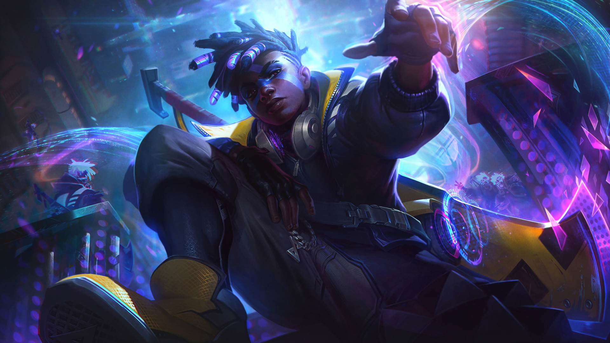

Biografía de T1 Zero Kyuu, el Maestro del Tiempo de la Grieta
En el vasto universo de League of Legends, hay un invocador que ha trascendido como una leyenda viviente. Conocido en los canales de la historia como T1 Zero Kyuu, este prodigio del carril medio comenzó su ascenso al estrellato en el año 2017. Desde entonces, ha dominado la Grieta con más de 40 campeones, cada uno llevado a la gloria de la maestría 7.
un estratega nato, T1 Zero Kyuu es un maestro en el arte de la guerra, maniobrando con destreza en el carril
medio y apoyando como un guardián en el carril secundario. Aunque sus habilidades son versátiles en todos
los
carriles, es en el corazón de la batalla donde su presencia se siente más fuerte.
Ascendiendo a través de las filas con determinación y habilidad, ha alcanzado el prestigioso rango de Platino, con la joya de Esmeralda como su logro más alto. Pero no es solo su rango lo que intimida a sus oponentes; es su campeón principal, Ekko, el que siembra el temor en el corazón de sus enemigos. Con Ekko, T1 Zero Kyuu no solo juega con el tiempo, sino que lo domina, revirtiendo los errores y asegurando victorias que parecían imposibles.

Cada partida es una nueva página en su legado, cada victoria un testimonio de su destreza. Y mientras la Grieta del Invocador sigue siendo testigo de su creciente leyenda, una cosa es segura: T1 Zero Kyuu es un nombre que resonará en la eternidad de League of Legends.
"No importa cuanto tiempo tengas si no como lo usas".Ekko